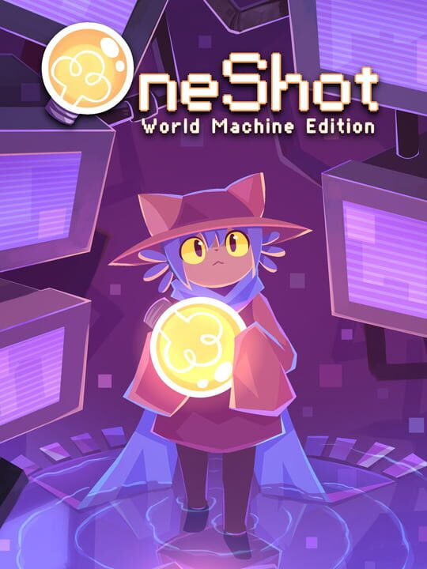

Complementary colors project
This is the official art for Oneshot, one of my favorite games.

Colors:
- #8777f3 (purple)
- #ffea86 (yellow)
Honestly, I think that purple and yellow are a very good set of complimentary colors, and it works very well in this image.